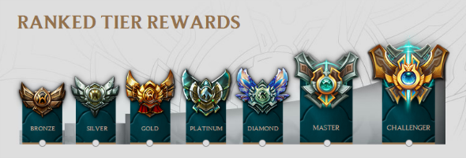

Unlike Normal games where players can enjoy the game without much intense competition, Ranked games are considered as competitive matches that help measure your ladder on the server. There are in total 7 divisions in League: Bronze, Silver, Gold, Platinum, Diamond, Master, and Challenger. Each division has 5 tiers (I,II,III,IV,V with V being the lowest tier in the division). If a player wins a ranked game, he/she will earn LPs. Vice versa for losing. Once the player reaches 100lp in his tier, he gets into series that will determine the promotion to next tier or division. Promotion series to higher division requires at least 3 wins out of 5 games. Promotion series to higher tier, though, requires at least 2 wins out of 3 games. On the other hand, when the player reaches 0 LP, they have a high chance of being demoted to a lower tier or division if they lose the next game(s).

- 7 million players (21% of the active player base) across all servers
- Bronze I is the most common division in the league, with 1.55 million players globally
- Bronze V is the least common division in the league, containing 700,000 players globally
- Bronze is considered by some players to be the hardest league to get out of, due to the high number of trolls and griefers
- The average KDA in Bronze is 2.29 which comes from an average of 6.37 Kills, 6.8 Deaths and 9.21 Assists.
- 1 million players (45% of the active player base) across all servers
- Silver V is the most common division in the league, with 3.5 million players globally
- Silver I is the least common division in the league, with 1.5 million players globally
- Silver is the most common league in League of Legends, with around double the number of players of the next most common.
- The average KDA in Silver is 2.46 which comes from an average of 6.23 Kills, 6.24 Deaths and 9.15 Assists.
- 5 million players (24% of the active player base) across all servers
- Gold V is by far the most common division in the league, with 2.8 million players globally
- Gold I is the least common division in the league, with 450,000 players globally
- Gold is the aim for many League of Legends players, as players must be in at least division Gold V to receive the unique end of season reward skins
- The average KDA in Gold is 2.55 which comes from an average of 6.08 Kills, 5.9 Deaths and 8.96 Assists.
- 1 million players (8% of the active player base) across all servers
- Platinum V is the most common division, with 1.2 million players globally
- Platinum I is the least common division, with 110,000 players globally
- Many players consider platinum to be a highly toxic division, full of players who think they should be Diamond but aren’t quite good enough. The phrase “ELO Hell” is most commonly used to describe players stuck in Platinum5
- The average KDA in Platinum is 2.57 which comes from an average of 5.79 Kills, 5.61 Deaths and 8.65 Assists.
- 650,000 players (2% of the active player base) across all servers
- Diamond V is the most common division in the league, with 450,000 players globally
- Diamond I is the least common division, with 27,000 players globally
- Many pros play in high Diamond divisions. It is not uncommon to play with/against professional League of Legends players in Diamond I or Diamond II.
- The average KDA in Diamond is 2.59 which comes from an average of 5.32 Kills, 5.24 Deaths and 8.25 Assists.
- 1,015 players (0.04% of the active player base) across all servers.
- Many pros player in Master Tier and it’s not uncommon for high master tier players to be approached to play on professional teams.
- The average KDA in master is 2.7 which comes from an average of 4.94 Kills, 4.67 Deaths and 8 Assists.
- This is only the top 200 players in each Region which means it’s a tiny percentage of the global player base.
- It’s not uncommon for a professional player to have multiple accounts in Challenger at once. At one point WildTurtle had 4 Accounts in Challenger. His main account and three League of Legends smurf accounts.
- The average KDA in challenger is 2.79 which comes from an average of 5.3 Kills, 4.65 Deaths and 7.7 Assists.